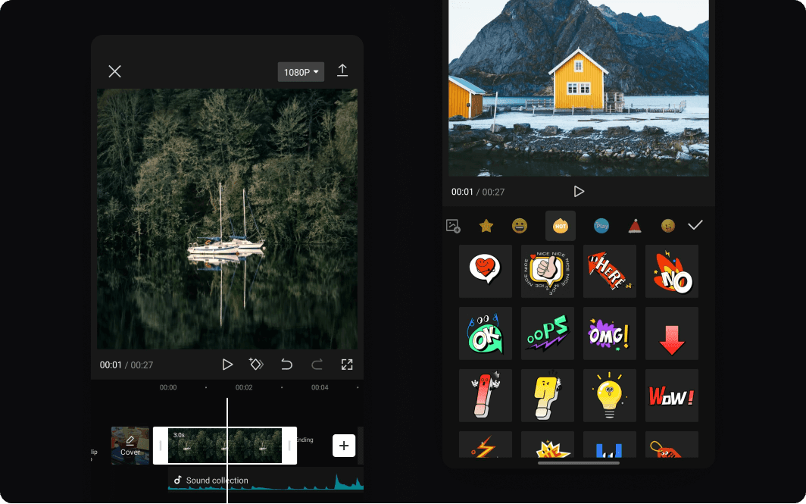

In today’s fast-paced digital world, video content reigns supreme. Whether you're a content creator, a social media enthusiast, or someone who just loves capturing life's moments, having a reliable video editing tool is crucial. Enter CapCut APK, a game-changer in the world of video editing. In this article, we'll delve into what makes CapCut APK stand out, explore its benefits beyond the basics, and sprinkle in a bit of humor to keep things light. So, grab a snack, settle in, and let’s explore why CapCut APK might just become your new favorite app!
CapCutapk is a mobile video editing application developed by ByteDance, the same company behind the popular TikTok app. It’s designed to offer an easy-to-use platform for creating and editing videos right from your phone. The “APK” in its name refers to the Android Package Kit, which is the format used for distributing and installing apps on Android devices.
You might be wondering, with so many video editing apps out there, what makes CapCut APK worth your attention? Here’s the lowdown on its standout features and benefits:
Let’s face it: not everyone has the patience or skill to navigate complex software. CapCut APK shines here with its intuitive and user-friendly interface. Even if you’re a complete newbie to video editing, you’ll find it surprisingly easy to get started. The app's clean layout ensures you can access all the tools you need without feeling overwhelmed.
One of the best parts about CapCut APK is that it's completely free and doesn’t slap a watermark on your creations. Most free video editing apps bombard you with watermarks or require you to pay to remove them, but CapCut APK lets you edit and share your videos without any annoying logos or text overlay. It’s like having a premium video editor without the premium price tag!
Despite its simplicity, CapCut APK offers a wide range of editing features. From basic trimming and cutting to more advanced options like multi-layer editing and keyframe animations, this app has you covered. You can also add text, stickers, and music to your videos. It’s like having a mini film studio in your pocket—minus the hefty equipment costs!
Tired of spending hours perfecting your video? CapCut APK comes with a variety of pre-made templates and effects that can give your videos a polished look with just a few taps. Whether you’re aiming for a professional finish or just want to add some fun flair, there’s something for everyone. It’s the editing equivalent of a cheat code for making your videos look fabulous!
In the age of social media, being able to share your content quickly is essential. CapCut APK makes this a breeze by allowing you to export and share your videos directly to platforms like TikTok, Instagram, and Facebook. No need to juggle between apps—just create, edit, and share with a few simple steps. It’s almost like having your own personal social media manager!
Nobody likes watching videos that look like they were filmed with a potato. CapCut APK ensures that your final product retains high quality with its export options. You can choose the resolution and format that best suits your needs, whether it’s for a high-definition Instagram story or a full-length YouTube video. Your audience will appreciate the crystal-clear visuals, and you’ll look like a video editing pro.
CapCut APK is consistently updated to introduce new features and enhance performance. This means that you’re not just getting a static tool—you’re getting a dynamic app that evolves with your needs. Plus, the developers listen to user feedback, so if there’s something you wish the app could do, there's a good chance it might be added in a future update. It’s like having a video editor that grows with you!
While the core features of CapCut APK are impressive, there are some additional benefits that might not be immediately obvious but are worth noting:
CapCut APK encourages creativity by offering a range of customizable options. Want to create a video with a retro vibe or a futuristic look? You can experiment with filters, transitions, and effects to achieve the exact aesthetic you're going for. It’s your canvas—get as creative as you want!
With its straightforward tools and features, CapCut APK streamlines the video editing process, making it more efficient. You’ll spend less time figuring out how to use the app and more time focusing on creating awesome content. Think of it as your personal video editing assistant who doesn’t take coffee breaks.
One of the biggest advantages of CapCut APK is how quickly you can learn to use it. The app’s design is such that even those who are new to video editing can pick up the basics in no time. It’s like a crash course in video editing without the boring lectures and endless textbooks.
If you’re looking for a versatile, user-friendly, and free video editing tool, CapCut APK is definitely worth considering. Its array of features, combined with the lack of watermarks and ease of use, makes it a standout choice for both beginners and seasoned editors. Plus, with its seamless social media integration, you’ll be able to share your creations effortlessly.
In the world of video editing, CapCut APK is like finding a hidden gem. It’s got everything you need to create stunning videos without breaking the bank or spending hours learning complicated software. So, why not give it a try? Who knows—you might just find yourself creating content that rivals the pros!
And there you have it—CapCut APK, the app that makes video editing fun, easy, and free. Happy editing!